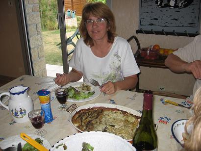
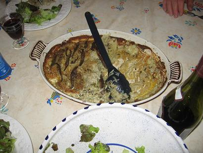
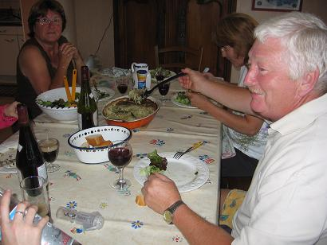
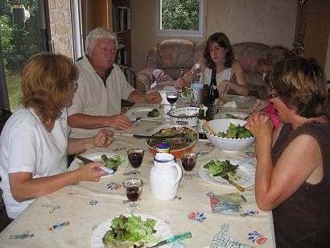

Recette n° 62 :
Râpé parmentier aux
filets d'anchois

Ingrédients : (pour
6 personnes)
- 2 grosses bottes d'oignons blancs aussi frais que possible
- 2 kg de pommes de terre (la Charlotte de Noirmoutier est excellente
pour ce plat)
- 150 g de beurre
- un beau bouquet de ciboulette (fraîche ou séchée)
- pour la décoration, quelques herbes : un beau bouquet de
persil plat, ou de coriandre frais, ou de cerfeuil frais 'selon
goûts des convives)
- 160 à 240 g d'anchois (2 à 3 petits bocaux de 80 g)
- deux grosses pincées de poivre
- pas de sel (celui des anchois doit suffir)

Préparation :
- ciseler les oignons et la ciboulette
- mettre la moitié du beurre à fondre à la
poêle (sans le faire noircir) avec la ciboulette
- mettre les oignons ciselés dans le beurre fondu et les faire
suer puis fondre (en aucun cas les laisser noircir ou brûler) ;
poivrer et réserver le tout
- égoutter les anchois et les passer rapidement sous l'eau du
robinet en les séparant les uns des autres ; les étaler
sur une assiette
- mettre le four à préchauffer entre 200°C et
220°C
- beurrer un plat allant au four avec 20% du beurre 'ou de l'huile, ou
de la margarine)
- à ce stade seulement
(cf. observation n°4 ci-dessous), éplucher les pommes de
terre et les passer à la râpe électrique
- dans le plat beurré, disposer dans l'ordre :
- une couche d'oignons fondus (la couche du fond)
- une couche de pommes de terre râpées
- un couche d'anchois
- une couche d'oignons fondus
- une couche de pommes de terre râpées
- un couche d'anchois (la couche du haut), que l'on
poivrera généreusement
- verser 50% de la crème par dessus et enfourner dans le four
chaud
- après 20 minutes de cuisson, défourner, verser le reste
de la crème, disposer le reste de beurre découpé
en copeaux
- réenfourner et laisser cuire encore 30 minutes
- servir immédiatement après décoration avec les
herbes

Observations :
1 - recette exécutée le 7 août 2006 à
Quiberon pour 6 convives (Denise, Jean-Claude et leurs filles
Céline et Fanny, Mamy et moi)
2 - bien apprécié, quoique la nécessité de
saler ou non ait été discutée (certains convives
trouvant qu'un peu de sel en plus améliorait le plat)
3 - s'accompagne bien d'une grosse salade verte à l'huile
d'olive, qu'on a laissé se fatiguer un peu, et d'un
Côtes du Rhône Villages4 - les pommes de terre
râpées s'oxydent (et donc noircissent) très vite ;
c'est pourquoi il est impératif de les râper au tout
dernier moment
